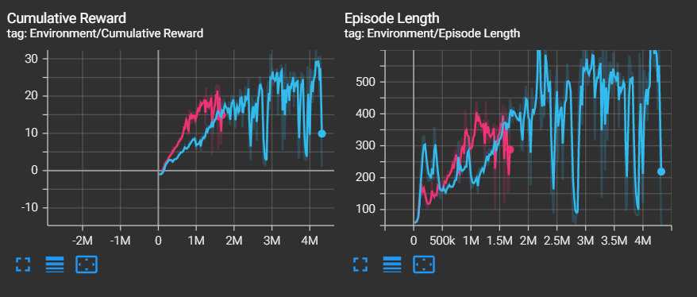

AI Snake
This has been one of my favourite and least favourite projects at the same time. It started off as me trying to learn MLAgents and tensorflow in unity.
In the end however it became something rather different.
Below is the final build however Beyond that is the story of how I ended up with this build. I hope you enjoy :)
A bit about the development
The main inspiration for starting this project was that I wanted to learn how to use MlAgents with Unity. I thought a reasonable first experience would be to try a relatively simple game like snake.
The making of the game didn't go too badly I had some issues with food generating on the snakes tail but other than that the game itself was playable.
Now comes the part of actually implementing the AI.
One of my friends has experience with MLAgents so he helped me implement it into my game and then it was a case of tweaking it and letting it train.
There were a few bugs along the way mainly with food generation.
I was struggling to get food not to spawn in the snake.
Eventually I got this fixed, In the end it was something simple to do with the order in which the two different scripts ran.
Back to the AI.
Using MLAgents meant that a lot of the AI stuff is done behind the scenes.
The only real thing I had to do was give it inputs.
I ended up giving it a raycast from the head which could detect walls,food and the tail.
I also gave it the coordinate position for the head and food.
All in all I felt this was a good mix of inputs such that it wasn't too many that it never learns or too few that there is little to learn.
This build was very fun to watch as there is something incredibly satisfying about watching an AI gradually improve and get better.
The resulting AI nicknamed 'Jim' wasn't too bad however it could never get past a length of about 20-30.
I think this was due to not really being able to predict where the tail would end up and possibly a lack of training as my PC isn't a supercomputer.
I tweaked a few settings but it wasn't really changing much and
I came to the conclusion that it would be unlikely that I'd be able to train an AI to play snake.
The graph on the left shows the reward (how much food in total) for two different AI's with slightly different settings over 4 million iterations.
The graph on the right shows the average length of time of a game for the same two AI's. These are both measures of how well an AI does.

As you can see both start of making great improvements over a realtively small number of iterations.
However after about 2 million progress becomes very erratic.
Whilst it still appears to be making some improvements this was training overnight and I'm unsure how much better it could possibly get.
This is where I decided to change approach.
Introducing Hamiltonian Cycles! Essentially these are paths which the AI can follow which ensures it goes through every square in the grid.
The main idea now is to generate a hamiltonian cycle at the start of a game and then have the snake follow it around the grid.
This is great in that it will always succeed however it's not very efficient. To improve efficiency we need to allow the Snake to take shortcuts.
This means that suppose the snake could go from position 20 in the cycle to position 30
then as long as the length of the snake is less than the difference we have a valid move.
There are a few other conditions that account for the snake picking up food but this is the main principle.
Coding it wasn't that straightforward.
Firstly I had to generate the cycle which I did using Prim's Algorithm to create a maze template for the path to then follow.
Then I could use this to generate a Hamiltonian cycle by having the snake follow the maze always keeping the walls on it's left.
This results in a cycle that maps the whole grid and to ensure it's interseting it will be different each time.
Now all I had to do was ensure the snake followed the path and added in the logic for making shortcuts.
This is now the final version shown above. As you can see it will always win and is fun to watch.
You can also show the numbers which gives you the path that the snake follows.